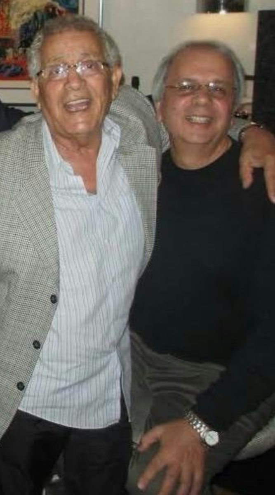
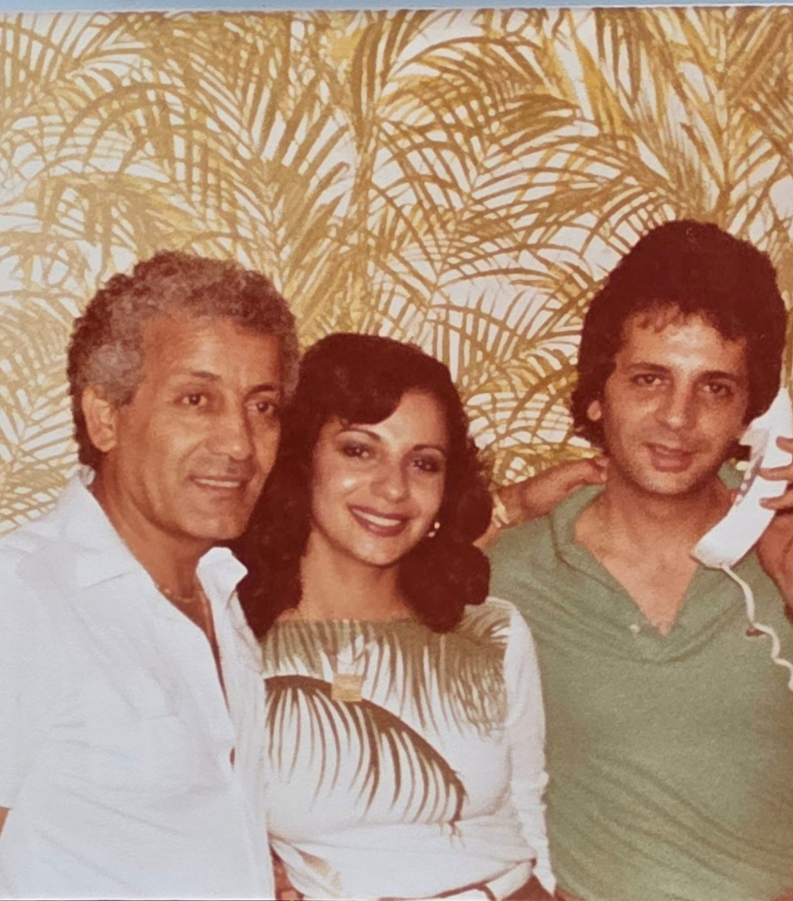
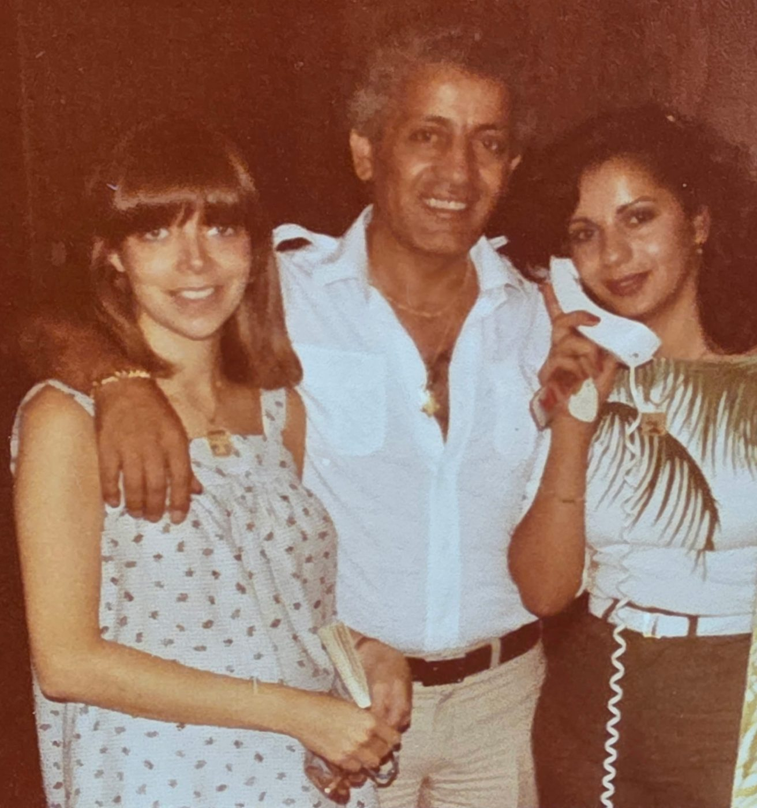
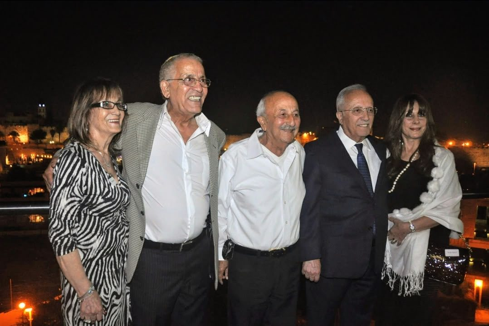
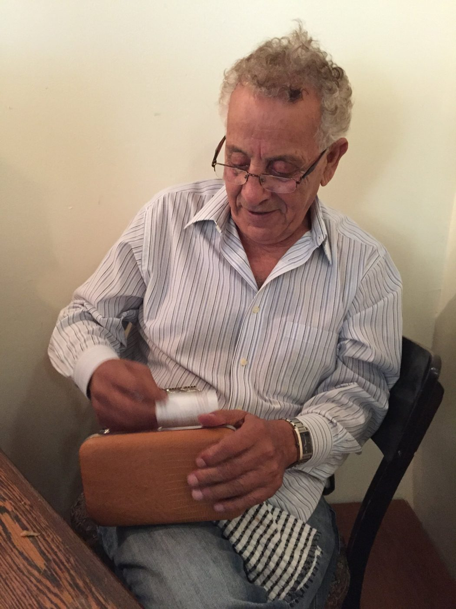

דברי זיכרון
Words of RemembranceWhat a Beautiful
מחווה משפחתית לדוד משה יפת
נשזר מהזיכרונות ששותפו ב־16 בנובמבר 2026
למשה היה ביטוי שג'ונתן זכר:
“What a beautiful.”
התרגום שלו. הביטוי שלו. ואיכשהו, כל מה שהיינו צריכים לומר.
איזה חיים יפים. איזה איש יפה. איזה דבר יפה, להשאיר אחריו משפחה עם כל כך הרבה סיפורים, כל כך הרבה צחוק וכל כך הרבה אהבה.
התכנסנו, דורות שלמים ומרחק של אלפי קילומטרים, כדי לזכור את דוד משה שלנו. הבאנו תמונות, נרות, זיכרונות, ובכמה מקרים גם בקבוק ג'וני ווקר בלאק לייבל.
את הדקות הראשונות העברנו גם בניסיון להדליק את המצלמות של כולם.
מסתבר שגם מפגש משפחתי לכבוד אגדה ירושלמית צריך תמיכה טכנית.
אבל ברגע שראינו זה את זה, משהו קרה. סיפור אחד פתח את הדלת לסיפור הבא. צחקנו. בכינו. קטענו זה את זה. תיקנו זה את זה. ולאורך כל הזמן, משה הרגיש קרוב מאוד.
כי כל אחד מאיתנו נושא חלק אחר ממנו.
שלומי נושא את השנים שבהן היו צעירים, כשעוד היה בצבא ועזר למשה להקים את הרונדו. הלילות הארוכים יחד. הביקורים באמריקה. כנפי העוף שהיו חייבות להיות חלק מהמסלול.
ג'ונתן תיאר את הקשר ביניהם כאהבה של אב לבן. ורותי זכרה את הביטוי הפשוט ביותר שלו: בכל פעם שדיברה עם משה, הוא רצה לדעת: "מה שלום שלומי?"
מעבר למדינות ולעשורים, הוא המשיך לשאול. הוא המשיך לדאוג.

גליה זכרה איש שידע לגרום לדברים לקרות. כשרצתה להאריך את שהותה בסנט לואיס אחרי התיכון, משה עזר לסדר לה דחייה מהצבא.
רותי זכרה את אותה השפעה פועלת בכיוון קצת אחר. היא רצתה עצמאות. היא רצתה שיבוץ בצבא רחוק מהבית. אמא שלה דיברה עם משה.
רותי נשארה בירושלים.
שתי אחייניות. שתי תוכניות שונות. דוד אחד יעיל מאוד.
זה היה הדבר המיוחד במשה: אם היית צריך עזרה, יכולת להתקשר אליו. וכמו שרותי אמרה, הוא תמיד ביצע.
לפעמים, הוא ביצע את הבקשה של אמא שלך.
סטיב יודע את זה מניסיון. אחרי שהציע נישואים לדקלה, משה טס לסנט לואיס כדי להכיר את המשפחה של סטיב לפני שהיא נתנה לו את תשובתה.
רוב האנשים פוגשים את ההורים. סטיב קיבל ביקורת משפחתית בינלאומית.
משה התארח אצל אמו ואביו של סטיב, נהנה מחברתם, וכנראה מסר דוח חיובי. סטיב זכר את האכפתיות שמאחורי זה: משה רצה שהמשפחה שלו תהיה מוגנת, מאושרת ובידיים טובות.
פסק הדין של סטיב היה קצר: "אדם נהדר. אין לי מה להוסיף."
הוא גם הזכיר לנו לכבד את ההורים שגידלו את משה ואת אחיו ואחיותיו. לאהבה שקיבלנו ממנו היו שורשים. ועכשיו השורשים האלה עוברים דרך כולנו.
דבי פגשה את משה לראשונה בישראל ב־1977 וזכרה שהייתה המומה. היא מעולם לא הכירה מישהו שיודע לשתות, לעשן, לצחוק ולחגוג כמוהו.
היא קראה לו "האדם הטוב הכי שובב שהכרתי."
איזה תיאור.
הוא היה לגמרי עצמו. אמיתי. בלי התנצלויות. וכשזה היה חשוב, אפשר היה לסמוך עליו.
"הוא תמיד גיבה את שלומי," אמרה דבי. "הוא גיבה אותי. הוא גיבה את הילדים שלי."
היא הראתה לנו תמונות מהברית של ג'ונתן ב־1981. משה הגיע לסנט לואיס לחגוג את הולדתו.
הוא הגיע. כך הוא אהב.


וכשבאנו לירושלים, הוא דאג שנדע שאנחנו שייכים לשם.
איריס, בהספד שנשאה ליד הקבר, נזכרה בגאווה לספר לאנשים שהדוד שלהן הוא משה מהרונדו. היא גם הודתה לו על שהכיר בין אביה, חברו, לבין אחותו, אמה. משפחה שלמה צמחה מההיכרות הזאת.
מיכאל איתן נורסוף, שהקריא את דבריה במפגש שלנו, הביא את ההכרת תודה הזאת אל החדר.
"בזכותך הפכו לזוג והקימו משפחה לתפארת."
חלק מהאנשים שזוכרים את משה חבים את עצם קיומם לאינסטינקט שלו לחבר בין אנשים.

והחיבור בין אנשים הפך למפעל חייו.
שלומי סיפר לנו איך משה הלך לראש עיריית ירושלים, טדי קולק, עם חזון לבית קפה בפארק. החזון הזה הפך לקפה רונדו. היו עוד מקומות, עוד הופעות, עוד מפגשים. משה אהב את האקשן. הוא ידע להניע דברים ולהביא אנשים בדלת.
גליה תיארה את הקשר בין האיש למקום שלו בפשטות כזאת:
"הרונדו היה משה."
בשבילנו, לנסוע לישראל פירושו היה ללכת לרונדו. גליה זכרה לילות שנמשכו עד חמש בבוקר. לג'ט לג לא היה הרבה סיכוי מול דוד משה.
כשחזרה מאמריקה, הוא עשה אותה לקופאית.
"רק עלייך אני סומך עם הכסף שלי," היא זכרה שאמר.
בעולם של משה, משפחה יכלה להשיג לך דחייה מהצבא, מקום במסיבה הכי טובה בירושלים, ועבודה לוודא שהקופה מתאזנת אחר כך.
רותי זכרה שפגשה אנשים מירושלים והזכירה את הדוד שלה.
"משה יפת הוא הדוד שלך?"
אפשר היה לשמוע את ההכרה בשאלה.
וגליה זכרה באיזו קלילות הוא נשא את המוניטין הזה: "לא בצורה של ביג שוט." הקשרים שלו היו שם כדי לשמש מישהו שצריך עזרה. שבים לידו, מסבירים את הבעיה, והוא אולי כבר מושיט יד לטלפון.
הוא הכיר את האמנים, את מדריכי הטיולים, את האנשים שיכלו לעזור. אבל ברגע שהיית שם, הוא גרם לך להרגיש שאתה האדם שהוא חיכה לראות.
מיכה רופה זכר שהיה בן שתים־עשרה, כמעט שלוש־עשרה, כשהגיע לפני חגיגת הבר מצווה שלו. משה סידר לו קוקה־קולה, צ'יפס וחומוס.
למבוגר, אולי נשנוש.
לילד ההוא, חוויית VIP מלאה.
מיכה זכר שהרגיש כמו הילד הכי מגניב בעולם. והוא זכר את העקביות: בכל ביקור, אותה חמימות, אותה אנרגיה. משה עזר ללמד אותו משהו על מי שהוא ומאיפה הוא בא.
במשפחה מלאה באנשים עם מתנות לתת, משה לקח על עצמו אחריות מיוחדת להראות לכולם איך ליהנות מהחיים.
טלי זכרה את בת המצווה שלה ואת הדרך שבה משה פרש את השטיח האדום. מוזיקה, חגיגה, נדיבות. הכול ערוך כדי ששאר האנשים יהיו מאושרים.
היא גם זכרה שהגיעה לישראל כילדה והושארה אצל אחרים בזמן שאמא שלה הלכה לרונדו.
היו שתי בעיות בסידור הזה: אמא שלה הלכה, ואמא שלה הלכה למסיבה בלעדיה.
בפעמים שטלי זכתה ללכת, היא זכרה את המוזיקה, את העשן ואת התחושה הברורה שמשהו נפלא קורה.
שנים אחר כך, משה הביא את הרוח הזאת לסנט לואיס. מילטי תלה שלט על בית הבריכה: "Moshe’s Man Cave." הביקורים שלו הפכו למסורת משפחתית, כולל זמן עם בתו לורן.
טלי הזכירה לנו שמי שנתן כל כך הרבה מעצמו ממשיך למלא את חיינו הרבה אחרי שנוכחותו הפיזית הסתיימה.
איימי זכרה אותו כמעט כמו סלבריטי. גדול מהחיים, שאי אפשר לטעות בו, תמיד חלק מישראל. היא זכרה שהוא הקפיד לראות אותה ואת ריאן במהלך טיול תגלית שלהם, והיא זכרה את המשפחה יחד בפסח.
היא גם נתנה לנו משהו חשוב באותו ערב: את השמחה לשמוע את הסיפורים של כולם ולהכיר אותו לעומק דרכם.
אנחנו עדיין יכולים לגלות עוד על מישהו שאנחנו אוהבים. אנחנו יכולים לתת את הגילויים האלה זה לזה.
דוד גודאי זכר איש שנראה כאילו קפא בזמן. משה בתמונות משנות השמונים נראה דומה להפליא למשה שהוא זכר משנות התשעים, משנות האלפיים והלאה.
התיאוריה של דוד הייתה שהבלאק לייבל שימר אותו.
אולי אפילו כבש אותו.
גליה הציעה ראיה נוספת: משה התייחס לטיפוח שלו ברצינות. היא זכרה שהלכה איתו לספר. האיש התכוון להיראות טוב.
בין כל התיאוריות המשפחתיות, אולי לעולם לא נכריע בשאלה המדעית. אבל כולנו מסכימים שהוא היה נאה, מלא צחוק, ונפלא בהיותו הוא עצמו.
רותי זכרה גם את ההערכה שלו לנשים, במיוחד לנשים יפות. דוד גודאי הודה שמעולם לא הצליח לחבר את כל הנקודות בסיפורים על האהבות הרבות של משה.
ואיפשהו במשפחה, קול אחד הציע עצה מצוינת:
"זה בסדר, אל תנסה."
גם אחרי ערב שלם שהוקדש לחייו, למשה מגיע קצת מסתורין.
ג'ונתן מצא את ההשוואה המתבקשת: האיש המעניין ביותר בעולם. מיכאל השאיל את קולו לגרסת ג'וני ווקר של המשפט המפורסם, ואז הכריז:
"התאמנתי לרגע הזה כל חיי."
משה היה נהנה מזה. המשפחה יחד, קצת ויסקי, ומישהו צוחק צחוק טוב.

דוד נורסוף נשא זיכרון אחד מאוד ספציפי: משה אמר לו שהוא לא אוכל ארוחת ערב.
זה נשאר עם דוד יותר מעשרים שנה.
איש שהיה בעל מסעדה. שאהב אוכל. שהאכיל את כולם.
בלי ארוחת ערב.
המשפחה מיד התחילה לדון בארוחת צהריים, בשעות הארוחות, ומה בדיוק נחשב ארוחת ערב. גם עכשיו, משה הצליח לגרום לחדר שלם לדבר על סדר היום שלו.
רותי זכרה את התשובה שלו להזמנות לארוחת ערב: "לא, לא, לא ארוחת ערב. בואו נצא לארוחת צהריים."
שלומי הסביר שארוחת הצהריים הייתה האירוע המרכזי. הלילות היו לדברים אחרים.
למשה הייתה שיטה.
ומתחת לפרט הזה, דוד זכר את הדבר המהותי: האנרגיה, החיוביות, החיוכים.
דניאל זכר את העבודה הראשונה שלו ברונדו, כשהיה בערך בן עשר.
התפקיד שלו היה לפתוח בקבוק זכוכית של קוקה־קולה.
השכר שלו היה עשרים שקל.
דניאל הרגיש כמו מיליונר.
משה ידע איך לגרום לילד להרגיש מסוגל וחשוב. שנים אחר כך, כשדניאל היה בשנות העשרים שלו וניסה להבין מה לעשות עם חייו, משה נתן לו משהו שקט יותר: זמן לדבר, ומישהו שהקשיב.
מאחורי האישיות העצומה הזאת היה איש שיכול לשבת לידך ולפנות מקום לכל מה שהעסיק אותך.
דניאל זכר את משה ומילטי יחד ברונדו:
"עזוב, זה היה המקום הכי מגניב שהייתי בו בחיים."
דמיינו ילד שמסתכל על השניים האלה. רואה כמה אושר אדם יכול ליצור פשוט בכך שהוא מקבל אנשים בברכה, מצחיק אותם ודואג שיהיה להם טוב.
דניאל עובד היום בתחום האירוח, ועוזר לאנשים להרגיש רצויים וליהנות. הוא מזהה את ההשפעה של משה בעבודה הזאת, לצד ההשפעה של אביו.
הוא גדל כשהוא רואה אנשים שאהב עושים את זה בצורה יפה.
והוא זכר את משה מתקשר ושר:
“I love you so much, Daniel.”
במפגש שלנו, דניאל החזיר את המילים האלה לכל המשפחה.
“I love you so much.”
יש הרבה ממשה במשפט הזה.
ג'רמי, הג'יי ג'יי שלנו, זכר שהיה צעיר בפסח בבית של שלומי ודבי ושמע את הצחוק של משה שואג בין החדרים.
הוא היה כל כך חזק שלרגע הוא תהה אם הכול בסדר.
הכול היה בסדר גמור. משה היה שם.
כמה מופלא, להשאיר זיכרון שדור צעיר עדיין יכול לשמוע.
ג'ונתן זכר ששאל את משה למה, בשנות השבעים לחייו, הוא לא מוכר את הרונדו ומבלה את זמנו בטיולים ובהנאות.
משה הסביר כמה האירוח של אנשים חשוב לו.
ההנאה כבר הייתה שם: אנשים מגיעים, שולחנות מתמלאים, מישהו נהנה מאוד כי הוא אפשר את זה.
ג'ונתן נזכר בזה שוב בירח הדבש שלו עם אלכס. הטיול שלהם עבר בישראל, באיטליה ובהודו. משה הבהיר שאיך שלא ייראה הלוח זמנים שלהם, הם מבלים איתו.
הוא לקח אותם למחניודה, חגג איתם על ערק באמצע היום, והפך את האושר שלהם לחלק מהאושר שלו.
הוא רצה להיות איתם. הוא רצה לתת להם זיכרון יפה.
וכך עשה.


“What a beautiful.”
ג'ונתן זכר ששמע את המילים האלה על דברים שמשה התפעל מהם, אפילו על טלפון. היה בזה משהו כל כך הוא. הוא ראה משהו ששימח אותו, ואמר את זה.
הוא נתן להנאה שלו קול.
הוא נתן קול גם לאהבה שלו. שמענו את זה בשיר יום ההולדת של דניאל, בזיכרונות של רותי על הדאגה שלו לשלומי, ובסיפורים על כל ביקור שעשה ועל כל דלת שפתח.
בגיל תשעים ושתיים, הוא נתן לנו חיים שלמים של דוגמאות.
מיכאל ביקש מאיתנו להפוך את הדוגמאות האלה למעשים. לכבד את משה בכך שנפתח את הבתים ואת הזרועות שלנו. בכך שנעשה בשביל מישהו קצת יותר ממה שהיינו עושים אחרת. בכך שנניח לילדים שלנו לראות איך נראית האהבה הזאת.
הוא דיבר בדמעות על האנשים שהמשפחה שלנו איבדה, ועל השלווה שהוא מוצא בידיעה שהזיכרונות שלהם חיים בתוכנו.
ואז הוא ביקש מאיתנו לקחת את הזיכרונות האלה החוצה, אל העולם.
לתת לאנשים שאנחנו אוהבים להמשיך לעצב את הדרך שבה אנחנו חיים.
רותי זיהתה את אותה רוח בכך שג'ונתן כינס אותנו: מחשבה אוהבת שאחריה בא מעשה.
וגליה הזכירה לנו איזו מתנה זאת, משפחה שעונה: "הנני."
רצינו שכולנו נוכל להיות בירושלים. במקום זה, מצאנו דרך להתכנס מהמקום שבו כל אחד היה. שמענו את הקולות זה של זה. אמרנו את שמו. הדלקנו את הנרות שלנו.
ולזמן קצר, מעבר לכל המרחק הזה, היינו יחד איתו.
אז אולי כך אנחנו שומרים אותו קרוב.
אנחנו מתקשרים. אנחנו מקבלים את האורח בברכה. אנחנו מקשיבים כשמישהו מנסה למצוא את דרכו. אנחנו גורמים לילד להרגיש כמו מיליון דולר. אנחנו נותנים לצחוק שלנו למלא את הבית.
אנחנו מספרים את הסיפורים, כולל המצחיקים. במיוחד המצחיקים.
אנחנו נותנים לאהבה שלנו קול כל עוד האנשים שאנחנו אוהבים כאן כדי לשמוע.
דניאל הראה לנו תמונה של משה נוהג במרצדס הירוקה שלו. הוא זכר את התחושה לשבת במושב האחורי, ולדעת שמשה יביא אותם לאן שהם נוסעים ויראה להם את המקומות הכי טובים.

דבי הסתכלה על התמונה הזאת וראתה את האור.
"הוא הביא אור," היא אמרה.
ואכן הביא.
לירושלים. לרונדו. לבתים שלנו. לילדות שלנו. לאבני הדרך שעזר לנו לחגוג ולימים הרגילים שהפך לבלתי נשכחים.
דוד משה, אנחנו מתגעגעים אליך.
אנחנו אוהבים אותך כל כך.
תודה שהראית לנו כמה חיים אדם אחד יכול להכניס לחייהם של אחרים.
What a beautiful.
נאמר על ידי אחייניתו איריס · הר המנוחות, ירושלים
דוד משה שלנו!
איש יקר ואהוב על כולם!
איזה מזל יש לנו שהיית חבר של אבא שלנו והכרת לו את אחותך, אמא שלנו. בזכותך הפכו לזוג והקימו משפחה לתפארת. על זה נודה לך כל חיינו.
דוד משה שלנו, לכל מקום שהגעת הבאת איתך אור ושמחה. היית מגנט, כולם חיפשו ורצו להיות בחברתך. היינו מחכים לפגישות איתך, לשמוע ממך סיפורים של פעם.. היית מתבל את הסיפורים, תמיד היה מעניין ומסקרן לשמוע אותך. אין ירושלמי שלא מכיר את משה יפת.
היינו תמיד משוויצות שדוד שלנו זה משה מהרונדו, מירושלים של זהב, תמיד זה היה שם דבר.
הילדים שלנו היו מחכים שדוד משה יבוא, יבקש ויסקי או ארק עם קרח, איך שהכוסית נגמרת, בלי מילים היא מתמלאה מאליה.. היו מסתכלים עלייך ומקשיבים לך בהתפעלות ובהמון אהבה, לא רוצים שהמפגשים איתך יסתיימו.
אם מישהו היה צריך עזרה, בכל דבר שהוא, ידענו שמשה ימצא פתרון.
היית עולם ומלואו בשביל אמא שלנו; הקשר ביניכם כאחים היה מיוחד באמת, מהסוג שמעורר קנאה. אהבה ללא תנאים.
משה שלנו, תמיד תישאר בליבנו: אהוב, מצחיק, יפה, חכם ויחיד במינו. אין עוד כמוך! עכשיו הגיע הזמן שתצטרף לכל יקירינו שכבר אינם איתנו... תן נשיקות לאבא שלנו, החבר הכי טוב שלך...
נוח על משכבך בשלום.